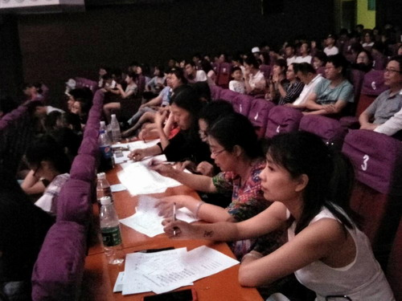
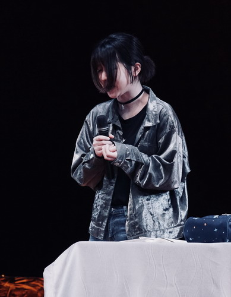
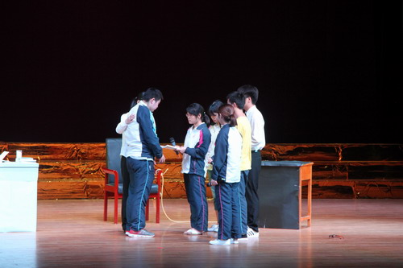
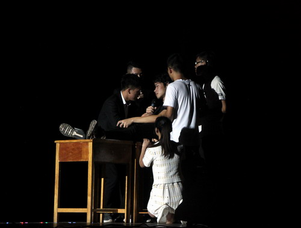
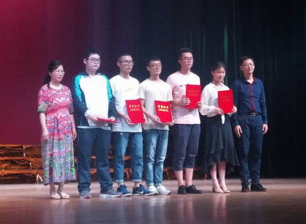

2018-05-28 15:12 学生处
5月25日晚，校大礼堂灯火通明，座无虚席，备受关注的第十届校园心理剧大赛决赛暨第十六届心理健康文化节颁奖晚会在此隆重举行。副校长王万山、清华大学高等教育研究所所长王晓阳，学工处（部）处相关负责人及部分二级学院党委书记出席并观看了比赛。校心理健康咨询中心、校团委及兄弟院校部分专家老师应邀担任了本次比赛的评委。


本届校园心理剧大赛以“梦，再起航”为主题，顺利通过预赛的十个二级学院的作品参加了本次决赛，为最后的冠军梦想展开了激烈的角逐。进入决赛的参赛作品取材广泛，内容丰富，围绕大学生人际交往的曲折、亲子关系的矛盾、网络成瘾的烦恼、求职就业的困惑等校园生活及社会热点内容展开，充分体现了当今大学生的心路历程和生活感悟。演员们精彩的表演，生动的语言，充分展示了我校学子的风采，现场观众不时响起热烈的掌声。



晚会现场，清华大学高等教育研究所所长王晓阳受邀讲话，他对我校心理剧大赛的连年举办给予了高度评价，并希望我校能把这种取之于学生并受益于学生的良好活动形式广泛传播，让全国更多的大学生通过心理剧的活动形式提升心理自助水平。
校心理健康咨询中心主任吴燕老师对决赛进行了点评，她充分肯定了同学们历经两个月为心理剧的创作和编排所付出的努力，对心理剧在我校连续十年的举办给予了高度评价，并希望同学们能再接再厉，争取在来年的比赛中创作出更优秀的作品。

经过激烈的角逐，各二级学院参赛队通过精湛的演技纷纷摘得本届心理剧大赛的各类奖项。副校长王万山、清华大学高等教育研究所所长王晓阳及出席晚会的领导嘉宾分别为获奖单位和个人颁奖。

本次心理健康文化节共设置了心理游园、心理知识讲座、心理案例分析、心理健康教育主题团日活动、心理剧大赛等内容，主题鲜明，内容丰富，形式多样，参与面广，各二级学院广泛动员，全校师生积极参与，营造了良好的心理健康教育氛围，促进了我校心理健康教育工作。
至此，第十六届心理健康文化节顺利落下了帷幕。
附：第十届校园心理剧大赛获奖名单
1、优秀组织奖（5个）
信息学院、药生学院、护理学院、政法学院、基础医学院
2、表演奖（10个）
一等奖（2个）：信息学院 文传学院
二等奖（3个）：基础医学院 土建学院 外语学院
三等奖（5个）：药生学院、护理学院、经管学院、化环学院、电商学院
3、优秀指导老师（7名）
喻静、贾峰、陈筱云、陈建华、李斌、方荷芳、赵宋文
4、最佳导演奖（2名）
信息学院：毛国政 刁烁华
5、最佳编剧奖（1名）
文传学院：李开元
6、最佳男演员奖（1名）
土建学院：杨友
7、最佳女演员奖（1名）
文传学院：王颖

学校地址：江西省九江市前进东路551号 邮政编码：332005 招生电话：0792-8310030 8310031 Email：jjuxb@jju.edu.cn
Copyright 2013 九江学院版权所有 备案序号：赣ICP备10004574号